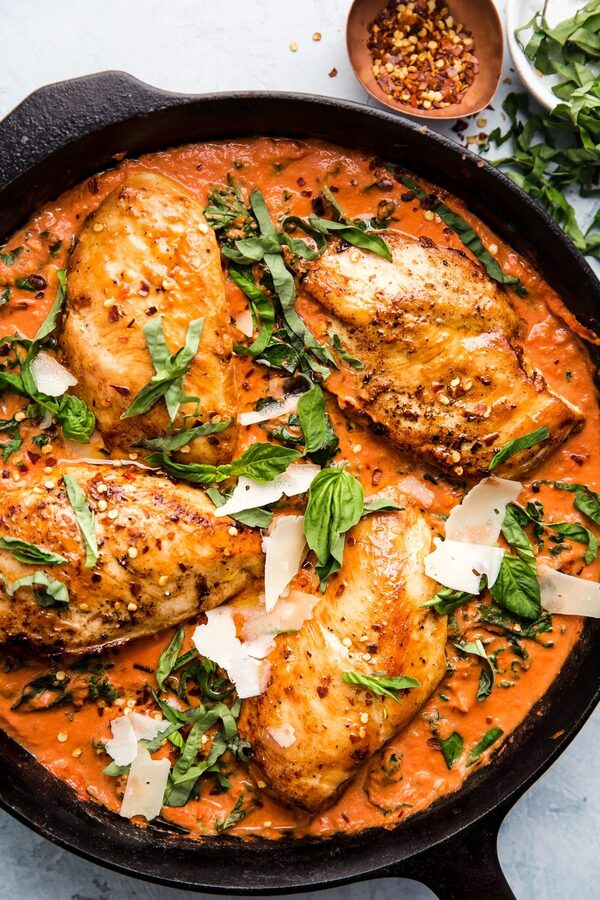

Creamy Chicken Tomato Dish

A creamy chicken tomato dish can be a delicious and satisfying meal that is packed with
flavor and nutrition. The quality of this dish can depend on a few key factors,
including the quality of the ingredients used and the skill of the chef preparing it.
The chicken should be fresh and tender, and the tomatoes should be ripe and flavorful.
The cream should be of high quality, with a smooth and creamy texture that enhances the flavor
of the dish without overpowering it. When these ingredients are combined with the right spices
and herbs, the result can be a dish that is both flavorful and satisfying.
The quality of a creamy chicken tomato dish can also depend on the cooking method used. Ideally,
the chicken should be cooked to a perfect golden brown, with a crisp outer layer and tender,
juicy meat inside. The tomatoes should be slow-cooked to release their natural sweetness and
flavor, and the cream should be carefully added to the dish to create a smooth and creamy texture.
The seasoning should be just right, with a balance of salt, pepper, and other spices to enhance the
flavors of the dish without overpowering it. Overall, a well-prepared creamy chicken tomato dish can
be a delicious and satisfying meal that is sure to please even the most discerning palates.
Ingredients
1.5 lb Chicken breast
2 Tbsp Olive oil
1 Tsp salt
1/2 Tsp pepper
3 Minced garlic cloves
14 Oz tomato sauce
2 Tbsp tomato paste
1 Cup heavy cream
1/2 Cup parmesan Cheese
Steps
- Add seasoned chicken to skillet, cook both sides about 5 minutes, remove from pan.
- Add paste, garlic, and cook for a minute.
- Add tomato sauce and simmer for 5 minutes.
- Add cream, mix well
- Put chicken into the mix, cook for 10 minutes
- Serve on rice , pasta, or eat it as. Enjoy